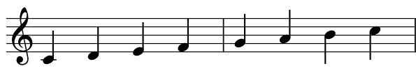
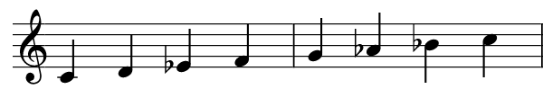

Musikkens humør stammer fra hvilke toner og akkorder artistene har valgt å bruke i sin musikk.
Tonene stammer fra en toneart (et fremtidlig tilskudd til noter) og skalaen som tilhører den tonarten. En skala kan vi definere som bestemte toner i en bestemt rekkefølge.
Det finnes mange forskjellige tonearter og minst like mange skalaer, men disse antallene er ikke viktige akkurat nå.
Her ser du to skalaer, begge i C.
Den første er C-dur-skalaen, og den andre er C-moll-skalaen.


Det som er viktig å merke seg her er tonene som har fått en b som fortegn. Det er disse tonene som gjør om skalaen fra dur til moll. Husk fra temaet noter at fortegnet b gjør tonene lavere. Det at enkelte noter har blitt lavere endrer hele skalaen fra en glad dur til en trist moll.
Det er spesielt tonene E og Eb som gir skalaene sitt humør. Begge disse tonene i begge skalaene sine kalles tersen. Ters betyr 3, som vil si at disse tonene er den tredje tonen i skalaen sin. E i C-dur kalles en dur-ters, Eb i C-moll kalles en moll-ters.
Om du vil kan åpne pianoet igjen. Forsøk å spille disse skalaene!